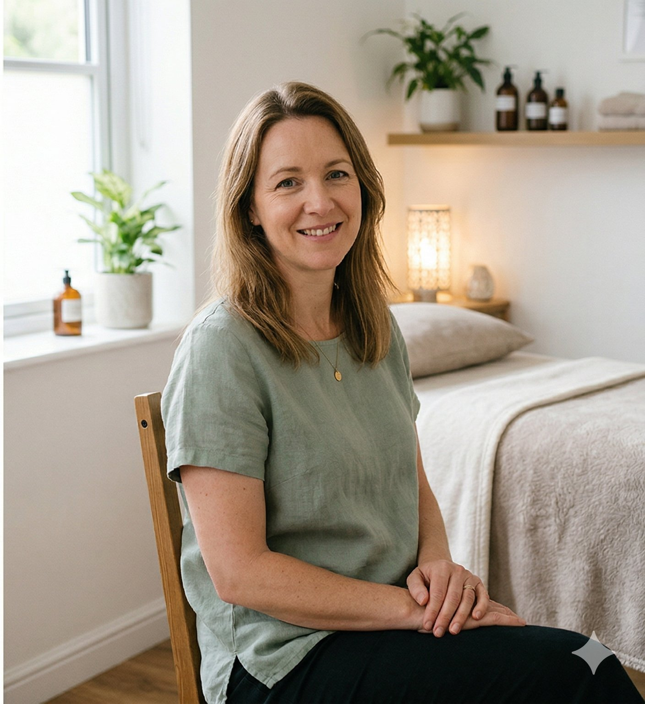

Hello, I'm Helen
I'm a fully qualified, MAR-registered reflexologist based in the heart of Stratford-upon-Avon. For over ten years, I've been helping people manage stress, ease chronic pain, support fertility, and find deeper relaxation through the gentle art of reflexology.
My practice is a calm, welcoming space where you can switch off from the noise of everyday life. I believe that healing starts with feeling safe and listened to — so every session begins with you, your needs, and your story.
I work from a beautiful treatment room in my home on The Green, just a short walk from the town centre. Whether you're dealing with a specific health concern or simply need time to unwind, I'm here to help.
How I Found Reflexology
Like many reflexologists, my path started with a personal experience that changed everything.
After years of struggling with chronic migraines that no amount of medication could shift, a friend suggested I try reflexology. I was sceptical at first — the idea that working on my feet could ease the pain in my head seemed unlikely. But after just three sessions, the difference was extraordinary. The migraines became less frequent, less intense, and eventually manageable for the first time in years. I was fascinated. I wanted to understand how it worked and, more importantly, I wanted to offer that same relief to others.
That curiosity led me to train at the International Institute of Reflexology, where I completed my Level 3 diploma and went on to specialise in maternity reflexology. I started treating friends and family from a small room at home, and word quickly spread. Ten years and hundreds of clients later, I still get the same quiet thrill when someone tells me their pain has eased, their sleep has improved, or they finally feel like themselves again. Reflexology gave me my life back — and helping others experience that same transformation is what gets me up every morning.
Qualifications & Registration
MAR Registered
Member of the Association of Reflexologists — the UK's leading professional body for reflexology.
Level 3 Diploma
Diploma in Clinical Reflexology from the International Institute of Reflexology, fully accredited.
Maternity Reflexology
Specialist training in fertility and maternity reflexology, supporting clients through conception, pregnancy, and beyond.
Fully Insured
Full professional indemnity and public liability insurance for your complete peace of mind.
DBS Checked
Enhanced DBS checked, ensuring the highest standards of safeguarding for all clients.
Ongoing CPD
Committed to continuous professional development, regularly attending courses to refine and expand my skills.
What Guides My Practice
You as a Whole Person
I don't treat symptoms in isolation. Every session considers your physical, emotional, and mental wellbeing — because they're all connected.
No Rushing
My sessions are never hurried. You deserve proper time — to settle in, to receive your treatment, and to come back to the world gently.
Listening First
Your body tells a story through the reflexes in your feet. I listen carefully — both to what you tell me and to what your feet reveal.
Gentle Yet Effective
Reflexology doesn't need to hurt to work. My technique is firm but gentle — designed to soothe and heal, never to cause discomfort.